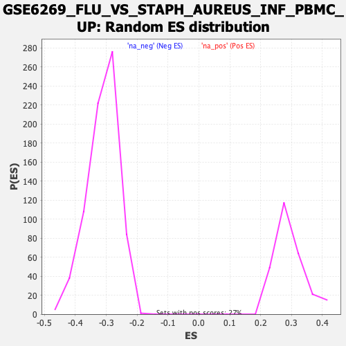

| | | Dataset | DE_genes |
| Phenotype | NoPhenotypeAvailable |
| Upregulated in class | na_neg |
| GeneSet | GSE6269_FLU_VS_STAPH_AUREUS_INF_PBMC_UP |
| Enrichment Score (ES) | -0.53854203 |
| Normalized Enrichment Score (NES) | -1.7351103 |
| Nominal p-value | 0.0 |
| FDR q-value | 3.603666E-4 |
| FWER p-Value | 0.006 |
Table: GSEA Results Summary
 Fig 1: Enrichment plot: GSE6269_FLU_VS_STAPH_AUREUS_INF_PBMC_UP
Fig 1: Enrichment plot: GSE6269_FLU_VS_STAPH_AUREUS_INF_PBMC_UP
Profile of the Running ES Score & Positions of GeneSet Members on the Rank Ordered List
| PROBE | GENE SYMBOL | GENE_TITLE | RANK IN GENE LIST | RANK METRIC SCORE | RUNNING ES | CORE ENRICHMENT | | 1 | BCL11A | | | 623 | 1.420 | -0.0297 | No |
| 2 | GPR18 | | | 721 | 1.239 | -0.0265 | No |
| 3 | RPAP2 | | | 757 | 1.178 | -0.0196 | No |
| 4 | ADA | | | 1257 | 0.635 | -0.0473 | No |
| 5 | NHLRC2 | | | 1372 | 0.575 | -0.0503 | No |
| 6 | SAP25 | | | 1420 | 0.558 | -0.0491 | No |
| 7 | DNAJC16 | | | 1618 | 0.465 | -0.0584 | No |
| 8 | ORC5 | | | 1758 | 0.405 | -0.0643 | No |
| 9 | SPIB | | | 1891 | 0.357 | -0.0702 | No |
| 10 | SLC25A17 | | | 1947 | 0.343 | -0.0711 | No |
| 11 | HLA-DOB | | | 2006 | 0.324 | -0.0724 | No |
| 12 | AHSA1 | | | 2227 | 0.260 | -0.0848 | No |
| 13 | RPP40 | | | 2282 | 0.247 | -0.0864 | No |
| 14 | DNAJC24 | | | 2704 | 0.176 | -0.1125 | No |
| 15 | TAF1B | | | 2729 | 0.173 | -0.1128 | No |
| 16 | TRMT13 | | | 2791 | 0.164 | -0.1155 | No |
| 17 | SEMA4D | | | 2902 | 0.150 | -0.1215 | No |
| 18 | TMCO6 | | | 2989 | 0.141 | -0.1260 | No |
| 19 | AKTIP | | | 3390 | 0.107 | -0.1514 | No |
| 20 | PRR5L | | | 3450 | 0.103 | -0.1544 | No |
| 21 | MAPRE2 | | | 3543 | 0.096 | -0.1597 | No |
| 22 | LARP4 | | | 3610 | 0.092 | -0.1633 | No |
| 23 | BLK | | | 3637 | 0.090 | -0.1643 | No |
| 24 | FCRL2 | | | 3704 | 0.087 | -0.1679 | No |
| 25 | PRKD2 | | | 3881 | 0.077 | -0.1788 | No |
| 26 | INPP5D | | | 4130 | 0.062 | -0.1945 | No |
| 27 | JAK1 | | | 4234 | 0.057 | -0.2008 | No |
| 28 | METTL4 | | | 4310 | 0.052 | -0.2053 | No |
| 29 | CR2 | | | 4322 | 0.052 | -0.2057 | No |
| 30 | IL16 | | | 4376 | 0.049 | -0.2087 | No |
| 31 | CD19 | | | 4540 | 0.039 | -0.2191 | No |
| 32 | CIITA | | | 4830 | 0.025 | -0.2378 | No |
| 33 | BNIP3 | | | 4852 | 0.024 | -0.2390 | No |
| 34 | RPA2 | | | 5044 | 0.013 | -0.2513 | No |
| 35 | NCOA3 | | | 5291 | 0.002 | -0.2674 | No |
| 36 | COBLL1 | | | 5674 | -0.019 | -0.2922 | No |
| 37 | ZBTB3 | | | 5678 | -0.019 | -0.2923 | No |
| 38 | SLC25A12 | | | 5779 | -0.025 | -0.2986 | No |
| 39 | MTMR4 | | | 5780 | -0.025 | -0.2984 | No |
| 40 | SYNRG | | | 5842 | -0.029 | -0.3022 | No |
| 41 | P2RX5 | | | 6054 | -0.043 | -0.3156 | No |
| 42 | TMEM156 | | | 6207 | -0.053 | -0.3251 | No |
| 43 | LZTFL1 | | | 6209 | -0.053 | -0.3248 | No |
| 44 | IPP | | | 6285 | -0.058 | -0.3292 | No |
| 45 | PDHB | | | 6769 | -0.093 | -0.3601 | No |
| 46 | SPDL1 | | | 6817 | -0.096 | -0.3624 | No |
| 47 | LAX1 | | | 6881 | -0.101 | -0.3657 | No |
| 48 | TSPAN3 | | | 6944 | -0.106 | -0.3690 | No |
| 49 | ZNF175 | | | 7072 | -0.116 | -0.3764 | No |
| 50 | ZKSCAN7 | | | 7224 | -0.129 | -0.3852 | No |
| 51 | PCDH9 | | | 7235 | -0.129 | -0.3849 | No |
| 52 | DBT | | | 7305 | -0.136 | -0.3884 | No |
| 53 | POLG2 | | | 7356 | -0.141 | -0.3905 | No |
| 54 | DVL2 | | | 7370 | -0.142 | -0.3903 | No |
| 55 | GPM6A | | | 7548 | -0.156 | -0.4006 | No |
| 56 | POLR2H | | | 7638 | -0.165 | -0.4052 | No |
| 57 | LRRN3 | | | 7773 | -0.177 | -0.4126 | No |
| 58 | ZNF500 | | | 7851 | -0.184 | -0.4162 | No |
| 59 | LRCH3 | | | 8100 | -0.208 | -0.4308 | No |
| 60 | CD27 | | | 8199 | -0.218 | -0.4355 | No |
| 61 | ARHGAP25 | | | 8329 | -0.232 | -0.4421 | No |
| 62 | ZMYND11 | | | 8448 | -0.245 | -0.4479 | No |
| 63 | SLC5A3 | | | 8673 | -0.271 | -0.4605 | No |
| 64 | RPS6KA5 | | | 8684 | -0.272 | -0.4590 | No |
| 65 | EZH1 | | | 8707 | -0.275 | -0.4583 | No |
| 66 | LRIF1 | | | 8713 | -0.276 | -0.4565 | No |
| 67 | ING4 | | | 8947 | -0.304 | -0.4694 | No |
| 68 | GATA3 | | | 8974 | -0.307 | -0.4687 | No |
| 69 | NPAT | | | 9028 | -0.314 | -0.4698 | No |
| 70 | BTN2A1 | | | 9109 | -0.324 | -0.4725 | No |
| 71 | PLS3 | | | 9159 | -0.330 | -0.4731 | No |
| 72 | CYB5A | | | 9285 | -0.345 | -0.4786 | No |
| 73 | CD72 | | | 9326 | -0.350 | -0.4785 | No |
| 74 | SIDT1 | | | 9354 | -0.353 | -0.4776 | No |
| 75 | ZNF544 | | | 9428 | -0.363 | -0.4795 | No |
| 76 | ERCC3 | | | 9455 | -0.366 | -0.4784 | No |
| 77 | SMC6 | | | 9662 | -0.397 | -0.4888 | No |
| 78 | PIGG | | | 9683 | -0.402 | -0.4870 | No |
| 79 | GLS | | | 9724 | -0.407 | -0.4865 | No |
| 80 | PSD4 | | | 9740 | -0.409 | -0.4843 | No |
| 81 | ZNF638 | | | 9799 | -0.418 | -0.4848 | No |
| 82 | COA1 | | | 10011 | -0.448 | -0.4952 | No |
| 83 | TMEM63A | | | 10022 | -0.450 | -0.4923 | No |
| 84 | SPECC1L | | | 10144 | -0.469 | -0.4966 | No |
| 85 | GSDMB | | | 10202 | -0.477 | -0.4966 | No |
| 86 | C1orf109 | | | 10355 | -0.499 | -0.5027 | No |
| 87 | TFB1M | | | 10386 | -0.503 | -0.5008 | No |
| 88 | COX11 | | | 10422 | -0.508 | -0.4991 | No |
| 89 | MTSS1 | | | 10444 | -0.511 | -0.4966 | No |
| 90 | GPA33 | | | 10512 | -0.522 | -0.4969 | No |
| 91 | WDR82 | | | 10756 | -0.561 | -0.5084 | No |
| 92 | CD22 | | | 11000 | -0.597 | -0.5197 | No |
| 93 | CIAPIN1 | | | 11254 | -0.647 | -0.5312 | No |
| 94 | WDR77 | | | 11367 | -0.670 | -0.5334 | Yes |
| 95 | ALDH5A1 | | | 11405 | -0.680 | -0.5305 | Yes |
| 96 | NOP14 | | | 11419 | -0.683 | -0.5261 | Yes |
| 97 | ETAA1 | | | 11431 | -0.684 | -0.5215 | Yes |
| 98 | LY9 | | | 11474 | -0.693 | -0.5189 | Yes |
| 99 | RBM8A | | | 11503 | -0.699 | -0.5153 | Yes |
| 100 | NXF1 | | | 11680 | -0.739 | -0.5211 | Yes |
| 101 | TLE1 | | | 11689 | -0.740 | -0.5159 | Yes |
| 102 | TCF3 | | | 11857 | -0.773 | -0.5208 | Yes |
| 103 | TRIM32 | | | 11896 | -0.784 | -0.5173 | Yes |
| 104 | RAD52 | | | 11935 | -0.792 | -0.5136 | Yes |
| 105 | ZBTB40 | | | 11976 | -0.800 | -0.5101 | Yes |
| 106 | DNAJA3 | | | 11984 | -0.801 | -0.5043 | Yes |
| 107 | OGFOD2 | | | 12014 | -0.807 | -0.5000 | Yes |
| 108 | OARD1 | | | 12023 | -0.810 | -0.4942 | Yes |
| 109 | RAB3GAP2 | | | 12059 | -0.816 | -0.4902 | Yes |
| 110 | TTC9 | | | 12118 | -0.834 | -0.4875 | Yes |
| 111 | CYP2R1 | | | 12318 | -0.882 | -0.4937 | Yes |
| 112 | NSUN5 | | | 12428 | -0.912 | -0.4938 | Yes |
| 113 | KLF2 | | | 12434 | -0.913 | -0.4871 | Yes |
| 114 | ZNF514 | | | 12503 | -0.929 | -0.4843 | Yes |
| 115 | NEK9 | | | 12573 | -0.945 | -0.4815 | Yes |
| 116 | SH2B1 | | | 12617 | -0.958 | -0.4769 | Yes |
| 117 | ZNF692 | | | 12780 | -1.005 | -0.4797 | Yes |
| 118 | CDK13 | | | 12908 | -1.047 | -0.4799 | Yes |
| 119 | FAM3C | | | 12991 | -1.073 | -0.4770 | Yes |
| 120 | PRRC2B | | | 13042 | -1.088 | -0.4718 | Yes |
| 121 | TMEM204 | | | 13088 | -1.102 | -0.4663 | Yes |
| 122 | ESYT1 | | | 13097 | -1.105 | -0.4582 | Yes |
| 123 | ZNF45 | | | 13225 | -1.147 | -0.4577 | Yes |
| 124 | ADARB1 | | | 13262 | -1.159 | -0.4511 | Yes |
| 125 | BRWD1 | | | 13276 | -1.166 | -0.4429 | Yes |
| 126 | PPOX | | | 13289 | -1.170 | -0.4346 | Yes |
| 127 | RASGRP2 | | | 13308 | -1.176 | -0.4267 | Yes |
| 128 | SFI1 | | | 13326 | -1.182 | -0.4187 | Yes |
| 129 | NMT2 | | | 13345 | -1.190 | -0.4106 | Yes |
| 130 | ZBTB24 | | | 13456 | -1.236 | -0.4083 | Yes |
| 131 | HIVEP2 | | | 13576 | -1.283 | -0.4061 | Yes |
| 132 | ST6GAL1 | | | 13632 | -1.302 | -0.3997 | Yes |
| 133 | DCAF8 | | | 13658 | -1.314 | -0.3911 | Yes |
| 134 | DNAJC11 | | | 13689 | -1.325 | -0.3828 | Yes |
| 135 | FAM193A | | | 13909 | -1.429 | -0.3861 | Yes |
| 136 | LAT | | | 13912 | -1.429 | -0.3752 | Yes |
| 137 | PAWR | | | 13952 | -1.445 | -0.3666 | Yes |
| 138 | NAT10 | | | 13962 | -1.451 | -0.3559 | Yes |
| 139 | CCT4 | | | 13968 | -1.456 | -0.3450 | Yes |
| 140 | OSBPL10 | | | 13970 | -1.456 | -0.3338 | Yes |
| 141 | RFTN1 | | | 13986 | -1.461 | -0.3235 | Yes |
| 142 | SNRNP70 | | | 14069 | -1.513 | -0.3171 | Yes |
| 143 | PDCD11 | | | 14180 | -1.591 | -0.3120 | Yes |
| 144 | ORC2 | | | 14263 | -1.639 | -0.3047 | Yes |
| 145 | CSNK1D | | | 14298 | -1.659 | -0.2941 | Yes |
| 146 | KAT2A | | | 14305 | -1.664 | -0.2816 | Yes |
| 147 | LRRC1 | | | 14348 | -1.686 | -0.2713 | Yes |
| 148 | MORC2 | | | 14353 | -1.690 | -0.2585 | Yes |
| 149 | RBM5 | | | 14368 | -1.697 | -0.2463 | Yes |
| 150 | NUMA1 | | | 14520 | -1.805 | -0.2422 | Yes |
| 151 | LBH | | | 14592 | -1.864 | -0.2324 | Yes |
| 152 | DIDO1 | | | 14694 | -1.965 | -0.2238 | Yes |
| 153 | SUN2 | | | 14772 | -2.039 | -0.2131 | Yes |
| 154 | PILRB | | | 14797 | -2.061 | -0.1987 | Yes |
| 155 | BANP | | | 14811 | -2.073 | -0.1835 | Yes |
| 156 | NUDCD3 | | | 14839 | -2.096 | -0.1691 | Yes |
| 157 | MPHOSPH8 | | | 14846 | -2.102 | -0.1532 | Yes |
| 158 | PTPRK | | | 14918 | -2.187 | -0.1410 | Yes |
| 159 | LDLRAP1 | | | 14921 | -2.189 | -0.1242 | Yes |
| 160 | PAN2 | | | 15046 | -2.375 | -0.1139 | Yes |
| 161 | PTCD3 | | | 15127 | -2.505 | -0.0998 | Yes |
| 162 | EIF2B5 | | | 15182 | -2.605 | -0.0831 | Yes |
| 163 | GGA2 | | | 15318 | -3.026 | -0.0686 | Yes |
| 164 | PBXIP1 | | | 15346 | -3.141 | -0.0460 | Yes |
| 165 | CBX7 | | | 15347 | -3.152 | -0.0217 | Yes |
| 166 | ITPKB | | | 15421 | -3.840 | 0.0033 | Yes |
Table: GSEA details [plain text format]

Fig 2: GSE6269_FLU_VS_STAPH_AUREUS_INF_PBMC_UP: Random ES distribution
Gene set null distribution of ES for GSE6269_FLU_VS_STAPH_AUREUS_INF_PBMC_UP